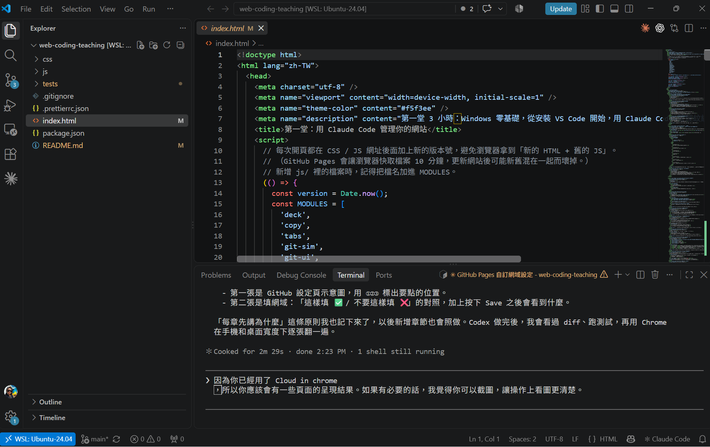
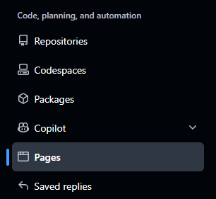
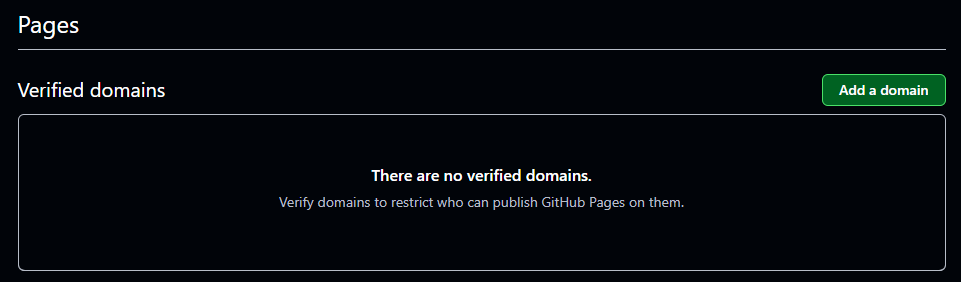
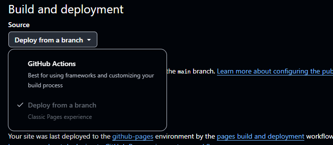
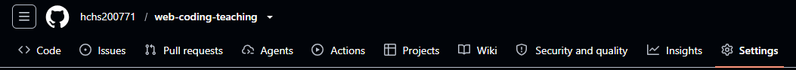
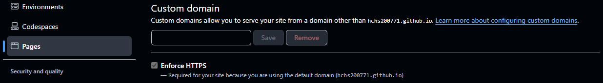

像記事本，但更聰明
網站的檔案其實都是文字。VS Code 會幫程式碼上色，比較好讀。
從零開始
00 · 上課前要準備
問上課前為什麼要先準備這麼多東西？
答裝軟體、收驗證信、綁信用卡最花時間，又常卡在等待。先準備好，上課的 3 小時才能拿來動手改你的網站，而不是一起盯著下載進度條。
學完這章，你可以：上課當天一打開電腦就能開始。
00 · 上課前要準備
本課程需要具有 Claude Code 至少 Pro 方案、Team 或 Max 方案；或者你有別人的分享碼可以免費使用 7 天，但必須現場綁定信用卡。
免費的 claude.ai 帳號不能用 Claude Code。用分享碼的話，上課記得帶信用卡。
00 · 上課前要準備
00 · 上課前要準備
00 · 上課前要準備
Claude Code 那章先跳過。下面這幾章不需要 Claude，照順序做：
拿到訂閱後，再回來做 Claude Code 那章和 Git 第三章：實戰。
01 · 第一堂課
今天裝好 VS Code 與 Claude Code、搞懂網站前後端、用 Git / GitHub 幫網站存檔。
← → 切換章節 ↑ ↓ 切換投影片 Esc 開啟或關閉章節總覽
01 · 第一堂課
問網站已經用 Lovable 做好了，為什麼還要學這些？
答Lovable 很方便，但每次修改都要花額度，網站裡面有什麼你也看不到。學會用 Claude Code 管理網站，你可以在自己電腦上改、隨時存檔、改壞了能回到上一版。網站真正握在你手上。
學完這章，你可以：知道今天 3 小時會做哪些事、投影片怎麼操作。
01 · 第一堂課
| 時間 | 一起做什麼 |
|---|---|
| 0:00–0:20 | VS Code 安裝與介紹（編輯器、終端機） |
| 0:20–1:05 | Claude Code 安裝、設定與試用 |
| 1:05–1:20 | 網站前端與後端 |
| 1:20–1:30 | 休息 |
| 1:30–2:10 | Git 第一章：環境設定與存檔（add / commit） |
| 2:10–2:25 | Git 第二章：分支簡介 |
| 2:25–3:00 | Git 第三章：實戰（Lovable → GitHub → 本機修改 → push） |
時間不夠時先跳過：Claude Code 狀態列設定、SEO、Git 第二章，以及實戰章最後的 SSH 額外項目。
01 · 第一堂課
02 · VS Code 安裝與介紹
問為什麼要裝 VS Code？用記事本不行嗎？
答網站是幾十個檔案組成的。VS Code 像一張工作桌：左邊看到所有檔案、中間改內容、下面有終端機可以下指令，Claude Code 也在這裡工作。之後每一堂課都在這張桌子上進行。
學完這章，你可以：打開網站資料夾，並在 VS Code 裡用終端機。
02 · VS Code 安裝與介紹
VS Code（Visual Studio Code）是免費的程式編輯器。看檔案、改檔案、下指令，都在同一個視窗。
網站的檔案其實都是文字。VS Code 會幫程式碼上色，比較好讀。
左邊看檔案，中間看內容，下面的終端機跑 Claude Code 和 Git。
02 · VS Code 安裝與介紹
檔名像 VSCodeUserSetup-x64-….exe。這是 User Installer，不用管理員權限。
下載的是 .zip。解開後，把 Visual Studio Code 拖進「應用程式」資料夾。
只從官網下載。搜尋結果裡的其他下載站可能夾帶廣告軟體。
02 · VS Code 安裝與介紹
一路按「下一步」。到「選取其他工作」這頁，確認下面都有勾：
前兩個讓你在資料夾上按右鍵，就能用 VS Code 打開。最後勾「啟動 Visual Studio Code」，按完成。
02 · VS Code 安裝與介紹
右下角通常會跳出「安裝語言套件」的提示，直接按安裝並重新啟動。沒看到的話：
裝好了畫面還是英文，就手動指定顯示語言：
歡迎頁可以直接關掉。想換深色或淺色外觀：Ctrl+K 放開，再按 Ctrl+T。
02 · VS Code 安裝與介紹
VS Code 一次打開「一整個資料夾」。一個網站就是一個資料夾。
從別人那裡下載、不確定的資料夾，先選「否，我不信任」，只看不執行。
02 · VS Code 安裝與介紹

1 2 3 4 5最上面一條是選單列（File、Edit、View…），設定和開新視窗從這裡找。
忘記功能在哪：Ctrl+Shift+P 打開命令選擇區，直接打字搜尋。Ctrl+P 用檔名找檔案。
02 · VS Code 安裝與介紹
終端機（terminal）是用打字下指令的視窗。VS Code 下方的面板就有一個，Windows 預設是 PowerShell。
PS C:\Users\你的名字>這行提示像地址牌：告訴你現在在哪個資料夾。PS 表示這裡是 PowerShell。
之後投影片寫「在 PowerShell 輸入」，就是貼在這個終端機裡。
02 · VS Code 安裝與介紹
看地址：現在在哪裡？
pwd看清單：這裡有哪些檔案？
ls換位置：走進文件資料夾。
cd Documents退一層：回上一個資料夾。
cd ..按 Tab 可以補完名稱。Ctrl+C 可以中斷目前的指令。
03 · Claude Code 安裝與試用
問Lovable 本身就是 AI，為什麼還要 Claude Code？
答Lovable 在網頁上幫你改，你只看得到結果。Claude Code 在你的電腦上直接打開網站的檔案：你用中文說要改什麼，它改給你看，你點頭了才算數。它也能做 Lovable 做不到的事，例如整理檔案、存檔、把網站放到你自己的網域。
學完這章，你可以：安裝並登入 Claude Code，用中文請它做事。
03 · Claude Code 安裝與試用
Claude Code 是住在終端機（terminal）裡的 AI 助手（agent）。它能讀檔、改檔，也能執行指令。 你是檢查成果的人（reviewer）。
像問朋友怎麼做。拿到建議後，要自己動手。
像有助手坐在你旁邊。先問過你，再幫你動手；權限模式會影響詢問方式。
03 · Claude Code 安裝與試用
在 VS Code 的終端機（PowerShell）貼上 Windows PowerShell 這一格。
irm https://claude.ai/install.ps1 | iexcurl -fsSL https://claude.ai/install.cmd -o install.cmd && install.cmd && del install.cmdcurl -fsSL https://claude.ai/install.sh | bash需要 Claude Pro / Max 訂閱或 Console 帳號（API 預付費）；Team / Enterprise 也可。 免費 claude.ai 帳號不含 Claude Code。
Windows 10 1809 以上或 Windows 11、至少 4GB 記憶體與網路。 不用管理員權限，也不用先裝 Git，等一下的 Git 第一章才裝。原生安裝會自動更新。
這裡大概要等 5 到 10 分鐘。下載時畫面不會動、也沒有進度條，下載完才會出現下面的文字。不要關掉視窗。
Setting up Claude Code...
Installing Claude Code native build latest...出現這兩行代表正在安裝，再等它跑完。完成後把 VS Code 整個關掉重開。
看到「The token '&&' is not a valid statement separator」：把 CMD 指令貼進 PowerShell 了。 看到「'irm' is not recognized」：把 PowerShell 指令貼進 CMD 了。
03 · Claude Code 安裝與試用
下載安裝程式，然後直接執行它。
| 片段 | 意思 |
|---|---|
irm |
Invoke-RestMethod 的縮寫。到網址把內容抓下來，這裡抓到的是一段 PowerShell 程式碼。 |
https://claude.ai/install.ps1 |
要抓的網址。.ps1 是 PowerShell 腳本的副檔名。 |
| |
管線（pipe）：把左邊的結果交給右邊。 |
iex |
Invoke-Expression 的縮寫。把收到的文字當成程式碼執行。 |
腳本會下載 Claude Code，放到 %USERPROFILE%\.local\bin，並加進 PATH（電腦找程式的路線清單）。 所以裝完要重開 VS Code，才找得到 claude。
irm … | iex 會直接執行網路上的程式碼。只用在信任的官方網址；來路不明的網站叫你貼這種指令，不要照做。
03 · Claude Code 安裝與試用
claude --version看版本，例如 2.1.x（Claude Code）。
claude doctor做唯讀檢查，不會修改你的專案。
若顯示找不到 claude，先把 VS Code 整個關掉重開；只開新的終端機不夠。還是不行就看下一張。
03 · Claude Code 安裝與試用
claude : 無法辨識 'claude' 詞彙是否為 Cmdlet、函數、指令檔或可執行程式的名稱。程式裝好了，但電腦不知道去哪裡找它。在終端機依序執行這兩行：
[Environment]::SetEnvironmentVariable('Path', [Environment]::GetEnvironmentVariable('Path', 'User') + ";$HOME\.local\bin", 'User')& "$HOME\.local\bin\claude.exe"下次把 VS Code 整個關掉重開後，直接打 claude 就可以。 第二行如果顯示找不到檔案，代表安裝沒跑完，回到「安裝 Claude Code」重裝。
03 · Claude Code 安裝與試用
claude瀏覽器沒有自動打開：按住 Ctrl 點終端機裡的網址。授權頁給你一串代碼的話，複製後貼回終端機，按 Enter。 登入一次就會記住，之後不用再登入。
看到「API Error: 400 We've updated our Consumer Terms and Privacy Policy」：條款更新了。 在剛剛按「授權」的那個瀏覽器打開 claude.ai（同一個帳號）， 在跳出的視窗按同意，再回終端機重新問一次。沒有跳出視窗：在 Claude Code 輸入 /logout， 再打 claude 重新登入。
03 · Claude Code 安裝與試用
Claude Code 開著的時候，那個終端機就只能跟 Claude 聊天。要打 PowerShell 指令，用另一個終端機。
要離開 Claude Code：輸入 /exit，或連按兩次 Ctrl+C。
03 · Claude Code 安裝與試用
下面有斜線的指令，要輸入在 Claude Code 裡。不是 PowerShell。
開設定：調外觀、模型與回答風格。
/config選模型（model）：這次請哪位助手。
/model登入，或換另一個帳號。
/login看用量與額度。
/usage03 · Claude Code 安裝與試用
狀態列（status line）像儀表板。在底下顯示目前模型、資料夾、Git 分支。
在 Claude Code 裡貼上，讓它幫你設定：
/statusline 顯示目前模型、資料夾名稱和 Git 分支它會把腳本放在 %USERPROFILE%\.claude\，並更新 %USERPROFILE%\.claude\settings.json。不用自己寫。
設定檔是 JSON：不能加註解或最後多一個逗號。自訂狀態列可能藏起部分底部快捷鍵提示。
03 · Claude Code 安裝與試用
Shift+Tab 切模式。先看底下的名稱，練習時切到 manual mode。
⏸ manual mode on：改檔、跑指令前先問你。新手先用這個。
⏵⏵ accept edits on：改檔與簡單檔案指令不再逐次問。
⏸ plan mode on：只看、只規劃，不修改。
⏵⏵ auto mode on：另一個模型代你檢查動作。新版可能從這個模式開始。
/permissions在 Claude Code 裡查看允許、詢問與拒絕的規則。
看清楚授權提示再按一般的 Yes。先不要選「Yes, and don’t ask again」。 不懂就問它「這個指令會做什麼？」平常電腦不要用略過權限（bypassPermissions）。
Esc 中斷；空白輸入列連按兩次 Esc 可回到之前（rewind）。 這能復原 Claude 的檔案編輯，但不能復原指令搬動、刪除的檔案，也不能代替 Git。
03 · Claude Code 安裝與試用
這些斜線指令在 Claude Code 裡輸入：
查說明。
/help開新對話。
/clear挑一段舊對話繼續。
/resume建立 CLAUDE.md，寫下專案說明。
/init下面這個則在 PowerShell 輸入：
claude -c繼續這個資料夾上次的對話。要換行可按 Ctrl+J，或先打反斜線 \ 再按 Enter； 在 Claude Code 裡執行一次 /terminal-setup，VS Code 也能用 Shift+Enter 換行。
03 · Claude Code 安裝與試用
先在 Claude Code 裡問兩個小問題：
你好！用很簡單的話告訴我，你可以幫我做哪些事？我目前在哪個資料夾？裡面有什麼？03 · Claude Code 安裝與試用
先用假檔案練習，搬錯也不怕。在 PowerShell 那個終端機依序執行：
cd $HOME\Documentsmkdir 整理練習cd 整理練習claude請在目前資料夾建立 20 個練習用的假檔案：作品照片 .jpg（檔名帶 2026 年 8 到 10 月的日期，例如 2026-09-12-霧眉.jpg）、文件 .pdf 和 .docx、安裝檔 .exe。每個檔案放一行文字就好。做完列出清單。Claude 要建立檔案前會先問你。看清楚再按 Yes。
03 · Claude Code 安裝與試用
在同一個 Claude Code 裡接著說：
把這個資料夾裡的作品照片集中到『作品集照片』資料夾，依月份分類；其他檔案依類型分資料夾。不要刪除檔案。先給我看計畫，等我說好再動手，完成後告訴我搬了哪些。把作品照片集中起來。
檔案在目前的練習資料夾。
依月份分，不刪檔，先給計畫。
列出搬了哪些檔案。
先計畫、再確認、不刪除。熟練以後，再用同樣的說法整理真正的桌面。
03 · Claude Code 安裝與試用
問Claude Code 已經能上網查資料，為什麼還要裝 Claude in Chrome？
答沒有它時，Claude 只能「搜尋」和「抓網頁的文字」，像請人幫你剪報：看不到畫面、不能按按鈕，也進不了要登入的頁面。裝了之後，它可以直接操作你的 Chrome：看到網站真正的樣子、會點會打字、能進你已登入的 GitHub 和 Lovable，還能截圖給你看。
學完這章，你可以：請 Claude 打開你的網站檢查、截圖，或幫你在網頁上找設定。
03 · Claude Code 安裝與試用
額外項目，有時間再做。
| 比較 | 沒有（搜尋＋抓網頁文字） | 有（操作你的 Chrome） |
|---|---|---|
| 看到什麼 | 只有文字 | 真正的畫面，還能截圖 |
| 能不能操作 | 不能點、不能填 | 會點、會打字、會捲動 |
| 要登入的網站 | 進不去 | 用你已登入的帳號（GitHub、Lovable、Gmail） |
| Lovable 這類網站 | 常常只抓到空白 | 跟你看到的一樣 |
| 適合做什麼 | 查資料、讀文件 | 檢查網站、找設定、截圖教學 |
這份講義的 GitHub 截圖，就是 Claude 用 Chrome 打開設定頁截下來的。
03 · Claude Code 安裝與試用
--chrome 啟動。第一次會跳出說明，按 Enter。
claude --chrome/chrome需要 Pro、Max、Team 或 Enterprise 方案，Claude Code 要用 /login 登入。想每次都自動連上：/chrome → Enabled by default；但每次對話會多佔一點空間，不常用就不用開。
Claude 需要瀏覽器卻找不到擴充功能時，會跳出 Claude wants to use your browser，選 Install extension 也能照著裝。
03 · Claude Code 安裝與試用
用中文直接說要它在瀏覽器做什麼。
打開 http://localhost:5173，用手機寬度看首頁有沒有跑版，截圖給我看。打開我 GitHub 上網站 repo 的 Settings → Pages，告訴我現在的設定。打開我的網站，看 Console 有沒有錯誤，有的話幫我找原因。localhost 的數字以 npm run dev 顯示的為準。
03 · Claude Code 安裝與試用
你登入的網站它都進得去。只讓它去你信任的網站。
付款、刪除、送出、發布之前，它會先問。按允許前看清楚。
分享截圖或錄影前，先看有沒有個人資料。
輸入 /chrome，選 Reconnect extension；不行就把 Chrome 和 Claude Code 都重開。
04 · 網站前端與後端
問我又不寫程式，為什麼要懂前端和後端？
答跟 AI 溝通時，你要分得出要的是「畫面改一下」還是「要記住資料」（例如線上預約、會員）。分得清楚，才問得對，也才知道一個功能要花多少功夫和錢。
學完這章，你可以：判斷一個網站功能需不需要後端。
04 · 網站前端與後端
像點餐：瀏覽器送出請求（request），伺服器把畫面或資料送回來。 互動圖示範有查資料的網站；照片牆不一定會用到資料庫。
04 · 網站前端與後端
客人看得到的菜單、裝潢與按鈕。HTML 是菜單內容和架構；CSS 管裝潢與配色； JavaScript（JS）讓按鈕有反應。
客人看不到。處理訂單、記住預約，把資料收進資料庫（database）。
04 · 網站前端與後端
想一想你的紋繡網站。先猜，再點功能看答案。
04 · 網站前端與後端
像印好的作品冊：照片、介紹、價目表先準備好，打開就看得到。按鈕和照片切換也能有。
像預約櫃台：依客人和時間查資料，記住誰約了哪個時段。
你的網站現在：靜態網站就夠了。作品、服務、價目表，加一個 LINE 預約連結。
04 · 網站前端與後端
搜尋引擎最佳化（SEO），先想成替店面掛好招牌。
靜態網站最容易做好 SEO 的基本功。之後可以請 Claude Code 幫忙檢查；搜尋排名仍需要時間。
04 · 網站前端與後端
LINE 官方帳號、Google 表單、預約系統。像先請現成的櫃台幫忙。
例如 Supabase 幫你管帳號與資料庫，Lovable 也能接。等需求清楚再學。
04 · 網站前端與後端
起來走走，喝口水。
回來後：Git 與 GitHub
05 · Git 第一章：存檔
問檔案存好不就好了，為什麼要學 Git？
答讓 AI 改網站，有時會改壞。Git 像遊戲的存檔點：每改好一次就存一個，改壞了隨時回到上一個好的版本，也看得到每次改了什麼。
學完這章，你可以：用 add、commit 幫網站存檔。
05 · Git 第一章：存檔
像遊戲存檔點（commit）：每完成一小步就存一次，之後可以回頭看。
在你電腦裡記錄每次改了什麼。還沒上網也能存。
放存檔的網站。把本機紀錄送上去，就多一份雲端副本。
05 · Git 第一章：存檔
GitHub 命令列工具（GitHub CLI，簡稱 gh）幫我們登入、建保管箱。
winget install --id Git.Git -e --source wingetwinget install --id GitHub.cli --source winget已經有 Homebrew 的話：
brew install git gh第一次用 winget 會問是否同意來源條款：輸入 Y 再按 Enter。跳出「是否允許此 App 變更你的裝置」：按「是」，要密碼就輸入電腦的管理員密碼。
裝完把 VS Code 整個關掉再打開。只開新的終端機不夠。
git --versiongh --version05 · Git 第一章：存檔
每次存檔都會簽上名字。把下面的名字與信箱換成自己的。
git config --global user.name "你的名字"git config --global user.email "你的 GitHub 信箱"git config --global init.defaultBranch main最後一行把新專案的正式分支預設叫 main。檢查設定：
git config --global --listGitHub 的 Settings → Emails 有勾「Keep my email addresses private」的話，信箱要改填那頁顯示的 …@users.noreply.github.com，不然 push 會被擋下（GH007）。
05 · Git 第一章：存檔
還沒有帳號，先到 GitHub 註冊。
gh auth login用上下方向鍵選，Enter 確認：
gh auth status確認這台電腦已經登入你的帳號。
05 · Git 第一章：存檔
改好檔案 → 放上拍照台 → 拍成一張存檔照片。先按修改，再按 add 與 commit。
05 · Git 第一章：存檔
在 PowerShell 依序執行。先走到文件資料夾，網站就建在那裡：
cd $HOME\Documentsmkdir my-sitecd my-sitegit init隱藏的 .git 資料夾就是存檔簿。每個專案只要初始化一次，不要刪它。
05 · Git 第一章：存檔
現在狀況如何？
git status把改好的檔案放上拍照台（暫存區）。
git add .按下快門，存一個檔。
git commit -m "新增作品集頁面"看存檔紀錄。
git log --oneline想看改了哪幾行，也可以用：
git diff05 · Git 第一章：存檔
05 · Git 第一章：存檔
05 · Git 第一章：存檔
「新增霧眉作品照片」：知道這次做了什麼。
「更新」：過一週就忘了。
幫我看一下目前改了什麼，用一句中文寫 commit 訊息，然後幫我 git add 和 commit。先讓我確認訊息。06 · Git 第二章：分支簡介
問為什麼需要分支？
答想試新設計（例如整個首頁換風格），又怕弄壞正在接客的網站。分支是另開一本草稿：滿意再合回正式版，不滿意就丟掉，客人看到的網站完全不受影響。
學完這章，你可以：開一個草稿分支，試完再合回來。
06 · Git 第二章：分支簡介
分支（branch）像草稿本。main 是正式版；另開分支試新設計，滿意再合回來（merge）。
一個人做網站，大多時候直接在 main 上存檔就好。想大改版、不確定要不要時才開分支。
06 · Git 第二章：分支簡介
看有哪些分支。
git branch開草稿，並切過去。
git switch -c new-design回到正式版。
git switch main在 main 把草稿合回來。
git merge new-design06 · Git 第二章：分支簡介
06 · Git 第二章：分支簡介
我想試一個新的首頁設計，請幫我開一個分支再改，改完讓我預覽，我說好再合回 main。07 · Git 第三章：實戰
問為什麼要把網站抓到電腦、再推回 GitHub？
答前面練習用的是假資料，這章接上你真正的網站。GitHub 是雲端保險箱，你的電腦是工作桌：在電腦改好、推上去，Lovable 也跟著更新。從此網站由你自己管理。
學完這章，你可以：把自己的網站抓到電腦，改完推回 GitHub。
07 · Git 第三章：實戰
複製到本機叫 clone；把存檔送上雲端叫 push。今天把你的網站接起來。
07 · Git 第三章：實戰
推薦用於持續修改網站，讓本機與 Lovable 保持雙向同步。
不要刪掉 GitHub 上的 repo，會斷開同步。一次只會同步一個分支，預設 main。
07 · Git 第三章：實戰
cd "C:\Users\你的名字\Downloads\你的網站資料夾"git initgit add .git commit -m "從 Lovable 匯入"gh repo create my-site --private --source=. --remote=origin --push這樣建立的 repo 不會跟 Lovable 同步，適合備份或一次性使用；持續修改請用方法 A。 後面有「自動同步」的步驟只適用方法 A。
07 · Git 第三章：實戰
PowerShell 依序執行；帳號與 repo 換成自己的。
cd $HOME\Documentsgh repo clone 你的帳號/你的repocd 你的repocode . -r用目前的 VS Code 視窗打開這個網站資料夾（點代表「這裡」）。側邊欄就會列出網站所有檔案。
repo 名稱在 Lovable 的 GitHub 設定頁，或 github.com 你的帳號底下可以找到。
07 · Git 第三章：實戰
Lovable 專案使用 React + Vite。要先安裝 Node.js，才有執行網站的工具 npm。
winget install OpenJS.NodeJS.LTS裝完把 VS Code 整個關掉重開。Windows 預設不讓 PowerShell 執行 npm，先開放一次（只影響你自己的帳號）：
Set-ExecutionPolicy -Scope CurrentUser RemoteSigned問要不要變更時輸入 Y。再回到剛剛的網站資料夾，依序執行：
npm installnpm run dev打開它顯示的 http://localhost:… 網址。這是自己電腦上的預覽。Ctrl+C 停止。
也可以直接請 Claude Code 幫你跑起來。
07 · Git 第三章：實戰
07 · Git 第三章：實戰
git pullgit add .git commit -m "更新首頁價目表"git push先 git pull 拿最新版。然後把首頁的價目表更新成：霧眉 8800、飄眉 9800。改完讓我預覽，確認後幫我 commit 並 push。07 · Git 第三章：實戰
額外項目，有時間再做。gh 登入後已經能 clone 和 push，不做也沒關係。
SSH 是安全連線的方式。SSH 金鑰（key）像鑰匙與門鎖：
鑰匙留在自己電腦，絕不給別人。
交給 GitHub 當門鎖。設好後，push 不用再輸入 GitHub 帳密。
懶人做法：下面指令會引導你自動產生、上傳金鑰。我們接著練手動步驟，知道鑰匙放哪裡。
gh auth login -p ssh07 · Git 第三章：實戰
Windows 10 1809 以上與 Windows 11 已內建 OpenSSH 用戶端。把信箱換成自己的：
ssh-keygen -t ed25519 -C "你的 GitHub 信箱"ls $HOME\.ssh07 · Git 第三章：實戰
第一次要多給 gh 一個權限，允許它上傳公鑰。
gh auth refresh -h github.com -s admin:public_keygh ssh-key add $HOME\.ssh\id_ed25519.pub --title "我的筆電"也可以改用網頁：先複製公鑰。
Get-Content $HOME\.ssh\id_ed25519.pub | Set-ClipboardGitHub Settings → SSH and GPG keys → New SSH key → 貼上。兩種做法擇一即可。
07 · Git 第三章：實戰
ssh -T git@github.com第一次看到 Are you sure you want to continue connecting (yes/no)?，輸入：
yesHi 你的帳號! You've successfully authenticated, but GitHub does not provide shell access.看到這行就成功。它說不提供 shell 是正常的。讓 gh 之後使用 SSH：
gh config set git_protocol ssh已經抓下來的網站，在那個專案資料夾改用 SSH 連線地址：
git remote set-url origin git@github.com:你的帳號/你的repo.gitgit remote -v08 · 小抄與課後練習
問為什麼要留小抄和課後練習？
答今天學的指令，一週不用就會忘。小抄讓你需要時一眼查到；練習場是不怕弄壞的地方，多練幾次，下次上課才接得上。
學完這章，你可以：忘記指令時知道去哪裡查，也能自己練習。
08 · 小抄與課後練習
前兩個在 PowerShell；斜線指令在 Claude Code 裡。
啟動。
claude繼續上次。
claude -c查說明。
/help新對話。
/clear開設定。
/config設定狀態列。
/statusline建立專案說明。
/init讓 Claude 用瀏覽器。
/chromeEsc 中斷；Shift+Tab 切權限模式，練習用 manual mode。
08 · 小抄與課後練習
看狀況。
git status放上拍照台。
git add .存一個檔，訊息換成這次做的事。
git commit -m "更新作品照片"看紀錄。
git log --oneline看修改。
git diff拿最新版。
git pull送上雲端。
git push開草稿。
git switch -c new-design08 · 小抄與課後練習
登入。
gh auth login檢查登入。
gh auth status額外：產生鑰匙。
ssh-keygen -t ed25519 -C "你的 GitHub 信箱"額外：上傳公鑰。第一次需先授權，見實戰章。
gh ssh-key add $HOME\.ssh\id_ed25519.pub --title "我的筆電"額外：測試 SSH 連線。
ssh -T git@github.com抓到本機。
gh repo clone 帳號/repo08 · 課後玩玩看
選一題、輸入指令、看圖怎麼變。進階題可以留到以後玩。
08 · 小抄與課後練習
08 · 小抄與課後練習
課後試著更新一張作品照片，預覽後存檔。下次帶著你的網站和問題來。
09 · 課後：用自己的網域上線
問Lovable 已經給我一個網址，為什麼還要用自己的網域、自己部署？
答客人看到「你的名字.com」比一串 lovable.app 更專業、好記，名片和 Instagram 也放得下。學會自己部署，網站放在哪裡由你決定，不被單一平台綁住；GitHub Pages 放靜態網站本身不用錢，只要付網域的年費。
學完這章，你可以：讓客人打你自己的網域就看到網站，而且有 https 鎖頭。
09 · 課後：用自己的網域上線
GitHub Actions 會在每次 push 到 main 時，自動把網站建置（build）並發布。網域商那邊的 DNS 負責把「你的網域」指到 GitHub。
先決條件：Lovable 建立的 repo 是私人的；GitHub 免費方案只能用「公開」repo 開 Pages。二選一：把 repo 改成公開（Settings → General 最下面 Danger Zone → Change visibility；原始碼大家都看得到，不能放密碼或金鑰），或升級 GitHub Pro。
Lovable 付費方案也能直接在 Lovable 綁網域；這章講 GitHub Pages 的做法，同一個網域只選一邊指過去。
09 · 課後：用自己的網域上線
這裡是「個人設定」，不是 repo 設定。驗證可以防止別人把你的網域拿去用在他的 GitHub Pages。
先點右上角你的頭像 → Settings。

1
209 · 課後：用自己的網域上線
你的網域.com（不要加 www、不要加 https://）→ Add domain。_github-pages-challenge-你的帳號，值照畫面複製。有的網域商會自動接上網域，有的要打完整的 _github-pages-challenge-你的帳號.你的網域.com。
這筆 TXT 驗證完也不要刪，刪了會失去驗證。生效最久可能要 24 小時；離開頁面後，可在網域旁的 ⋯ 選 Continue verifying。
09 · 課後：用自己的網域上線
Lovable 網站要先 npm run build，才會變成瀏覽器看得懂的檔案（dist 資料夾），所以要用 GitHub Actions。

109 · 課後：用自己的網域上線
在專案新增 .github/workflows/deploy.yml，交給 Claude Code：
幫我把這個 Vite 網站設定成用 GitHub Actions 部署到 GitHub Pages：新增 .github/workflows/deploy.yml，push 到 main 時執行 npm ci 和 npm run build，上傳 dist 資料夾並發布。vite.config 的 base 保持 '/'，因為我會用自己的網域。build 完把 dist/index.html 複製一份成 dist/404.html，讓直接打開子頁面不會 404。改完讓我看，確認後 commit 並 push。用自己的網域時 base 是 '/'；如果只用 帳號.github.io/repo名稱 網址，base 要改成 '/repo名稱/'。設好網域之前從 github.io 網址打開是白畫面，是正常的。
09 · 課後：用自己的網域上線
GitHub Actions 是 GitHub 提供的「雲端自動化機器人」：你 push 之後，GitHub 借一台雲端電腦，照你寫好的步驟自動做事。
一份工作清單，寫在 repo 裡的 .github/workflows/ 資料夾，副檔名 .yml。裡面寫「什麼時候做」（例如 push 到 main）和「依序做哪些步驟」。
別人寫好、可以直接拿來用的一個步驟，像樂高積木。例如 actions/checkout 負責把你的程式碼下載到雲端電腦，actions/deploy-pages 負責發布到 GitHub Pages。@v7 這種寫法是指定版本。
不用現成積木，直接寫要執行的指令，就像你在終端機打 npm run build。
可以想成一張食譜：workflow 是整張食譜，每一步不是用現成調理包（action），就是自己動手（run）。
每次跑完會在 repo 的 Actions 分頁留下紀錄；公開 repo 使用 GitHub Actions 免費，私人 repo 每月有免費額度，這種小網站通常用不完。
09 · 課後：用自己的網域上線
Claude Code 寫的應該跟這份差不多，這是 Vite 官方範例加上 404.html 那一步。看得懂大概就好，不用背。
name: Deploy to GitHub Pages
on:
push:
branches: ['main']
workflow_dispatch:
permissions:
contents: read
pages: write
id-token: write
concurrency:
group: 'pages'
cancel-in-progress: true
jobs:
deploy:
environment:
name: github-pages
url: ${{ steps.deployment.outputs.page_url }}
runs-on: ubuntu-latest
steps:
- uses: actions/checkout@v7
- uses: actions/setup-node@v7
with:
node-version: lts/*
cache: 'npm'
- run: npm ci
- run: npm run build
- run: cp dist/index.html dist/404.html
- uses: actions/configure-pages@v6
- uses: actions/upload-pages-artifact@v5
with:
path: './dist'
- id: deployment
uses: actions/deploy-pages@v5| 片段 | 意思 |
|---|---|
on: push |
push 到 main 時開始。 |
runs-on: ubuntu-latest |
借一台 Linux 雲端電腦。 |
uses: |
用現成的 action。 |
run: |
自己下指令。 |
permissions |
允許這個流程發布到 Pages。 |
push 之後到 repo 的 Actions 分頁看進度，綠色勾勾代表發布成功，紅色叉叉點進去看錯誤，可以整段貼給 Claude Code。
09 · 課後：用自己的網域上線

1
2 3Lovable 建立的 repo 名稱通常和專案名稱相同。只有 repo 的擁有者看得到 Settings。
09 · 課後：用自己的網域上線
www.你的網域.com。www.mybrow.com
https://www.mybrow.com/
不要 https://、不要最後的斜線、不要空白。
GitHub 會開始檢查 DNS。這時還沒設 DNS，出現檢查中或失敗都是正常的；做完步驟 4 再回來看就會變成綠色勾勾。
建議主網址用 www。下一步兩種紀錄都設，GitHub 會自動把 你的網域.com 轉到 www.你的網域.com。
用 GitHub Actions 發布不需要 CNAME 檔案，有也會被忽略。先在 GitHub 填好，再去設 DNS，避免網域被別人搶先接走。
09 · 課後：用自己的網域上線
登入買網域的網站，找 DNS 設定（可能叫 DNS 管理、DNS Records、Zone）。
| 類型 | 名稱 | 值 |
|---|---|---|
| A（四筆分開新增） | @ |
185.199.108.153185.199.109.153185.199.110.153185.199.111.153 |
| AAAA（可省略） | @ |
2606:50c0:8000::1532606:50c0:8001::1532606:50c0:8002::1532606:50c0:8003::153 |
| CNAME | www |
你的帳號.github.io |
CNAME 只寫 你的帳號.github.io，不要加 repo 名稱。
先刪掉網域商預設的紀錄（例如停車頁的 A 紀錄）。名稱欄有的網域商寫 @，有的留空代表網域本身。不要新增 * 開頭的萬用紀錄。
09 · 課後：用自己的網域上線
在 PowerShell 檢查 DNS：
Resolve-DnsName 你的網域.com -Type AResolve-DnsName www.你的網域.com -Type CNAME第一個要列出四個 185.199… 的 IP；第二個要看到 你的帳號.github.io。DNS 生效最久可能要 24 小時，沒出現先等。
生效後回到同一頁（repo Settings → Pages），在 Custom domain 下面勾選 Enforce HTTPS（網址前面會有鎖頭）。這個選項可能要等到 24 小時後才能勾。
之後照每天的工作循環 push 到 main，GitHub 就會自動重新發布，網站幾分鐘後更新。
09 · 課後：用自己的網域上線
看 Actions 是不是紅叉；vite.config 的 base 要是 '/'。
檢查 workflow 有沒有複製 404.html。
DNS 還沒生效或紀錄打錯，對照步驟 4 的表。
等憑證發好，最多 24 小時。
如果之後不用 GitHub Pages 了，記得到網域商刪掉這些 A / CNAME 紀錄，免得網域被別人接走。